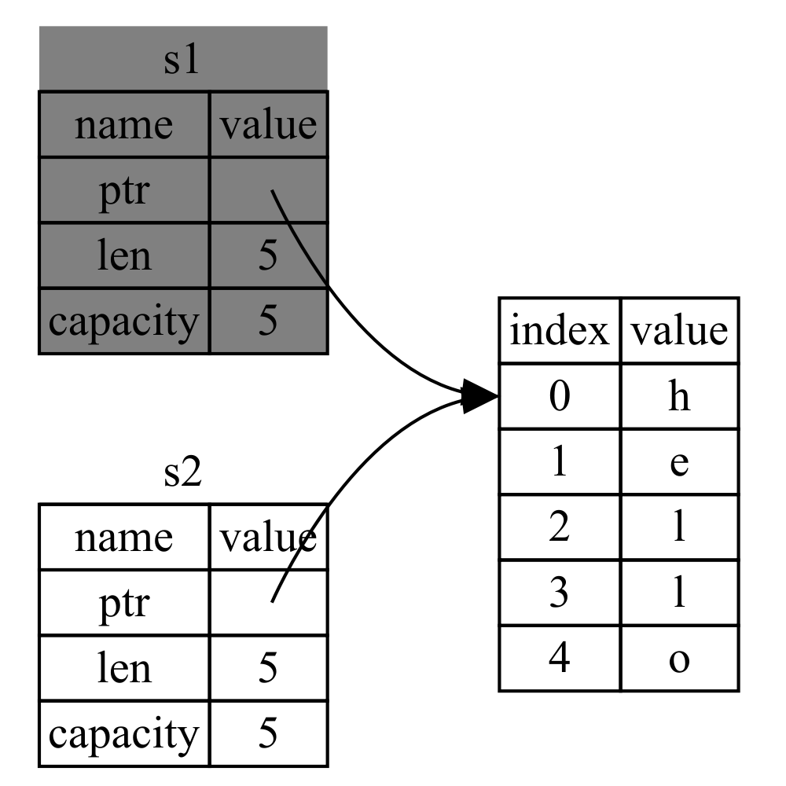
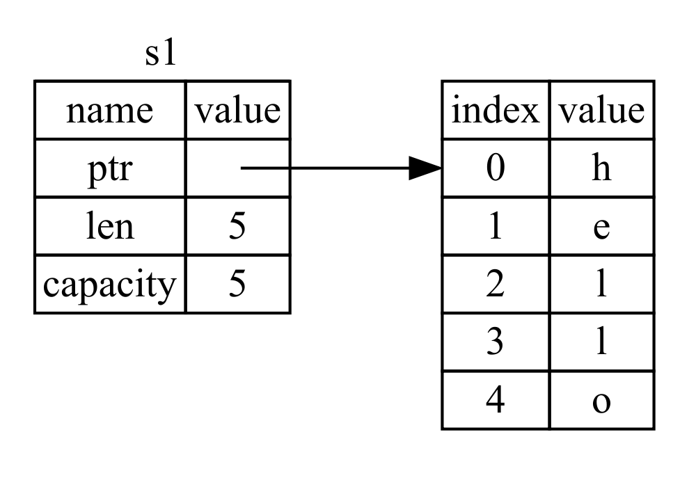

本文是读《Rust程序设计语言第二版》所有权相关内容的笔记。阅读这本书所敲的代码放在Github上。代码没有按书的结构分章节创建工程，而是将所有代码放在一个单独的工程中。
所有权
所有权是Rust中最为独特的功能，它使得Rust无需垃圾回收即可保障内存安全。
所有权规则
-
Rust中每个值都有一个被称为所有者的变量。
-
值有且只能有一个所有者。
-
当所有者离开作用域，这个值将被丢弃。
内存分配
以字符串为例，字符串字面量在编译时已经知道它的内容，它被直接硬编码进最终的可执行文件。它的快速高效来自于其不可变性。对于String类型，它为了支持可变，需要在堆上分配一块在编译时未知大小的内存来存储内容。这意味着：
1. 内存需要在运行时向操作系统申请。
1. 需要一个在处理完String时将内存返还给操作系统的方法。
内存申请在所有编程语言中都是非常通用的。内存的返还在不同语言中则各有区别。在有GC的语言中，GC记录并清除不再使用的内存。没有GC时，识别不再使用的内在，调用代码释放它就是程序员的责任了，如使用allocate和free。
Rust采用了不同的策略：内存在变量离开作用域后就被自动释放。当变量离开作用域，Rust为其调用drop函数，String类的作者可以在这里放置释放内存的代码。（类似C++的RAII）
变量与数据交互
交互方式一：移动
将一个变量赋值给另一个变量时，将复制变量（不是值）。如以下代码：
let s1 = String::from("hello");
let s2 = s1;
字符串变量s1由一个指向存放字符串内容的指针、字符串长度、字符串容量三部分组成。当把s1赋给s2时，会复制指针、长度、容量，但并不会复制指针所指向的数据（值）。

这样一来，s1和s2就都指向了同一块内存区域。前面提到过当变量离开作用域时，会自动调用drop释放内存。如果s1和s2都释放，会导致同一块内存被释放两次，产生二次释放`问题，产生内存污染和安全漏洞。
为了保证内存安全，在这种场景下Rust会认为s1不再有效，不需要再次释放。在Rust中这个赋值会复制指针、长度、容量，而不会拷贝数据，听起来像是“浅拷贝”。在这个过程中Rust会让第一个变量无效化，这个操作被称为移动（move）。以下代码会编译报错：
let s1 = String::from("hello");
let s2 = s1;
println!("{}, world!", s1);
因为s1赋给s2之后，相当于s1被移动到了s2，因此s1不再有效。

交互方式二：克隆
如果确实需要进行深度复制指针指向的数据，可以使用clone方法。下面的s1和s2都有效：
let s1 = String::from("hello");
let s2 = s1.clone();
println!("s1 = {}, s2 = {}", s1, s2);
栈上的数据：拷贝
对于整形等在编译期已知大小的类型是存储在栈上的，其值拷贝速度非常快，在赋值时会直接被复制（值）。
所有权与函数
将值传给函数在主义上与给变量赋值相似。向函数传递值可能会移动或复制，就像赋值语句一样。
返回值也可以转移作用域。函数返回值的所有权发生转移。
第个函数都获取并返回所有权代码会比较冗余。比如：
fn calculate_length(s: String) -> (String, usize) {
let length = s.len(); // len() returns the length of a String.
(s, length)
}
这时可以使用引用功能。
引用与借用
在调用calculate_length时，我们并不希望s的所有权转移至函数内，通常会希望s在调用完函数后仍然可用。这种情况下我们可以使用引用而不是直接获取所有权。
fn main() {
let s1 = String::from("hello");
let len = calculate_length(&s1);
println!("The length of '{}' is {}.", s1, len);
}
fn calculate_length(s: &String) -> usize {
s.len()
}
&符号就是引用，它允许你使用值，但是并不获取其所有权。s引用指向变量s1，但并不取得s1的指针（s1包括指向数据的指针、容量、长度）所指向的数据（值）的所有权。当引用离开作用域时，其指向的值不会被丢弃。

与使用&相对应的操作是解引用，解引用运算符为*。
获取引用作为函数参数称为借用。
可变引用
如变量一样，引用默认也是不允许修改引用值的。使用&mut s创建s可变引用。可变引用的限制：在特定作用域中的特定数据，有且只有一个可变引用。以下代码将会报错：
let mut s = String::from("hello");
let r1 = &mut s;
let r2 = &mut s;
Rust中通过这种方式也避免了数据竞争的发生，因为在编译期就会检查存在数据竞争的代码。
可以使用大括号来创建新的作用域，以允许拥有多个可变引用，这仍然不是同时拥有：
let mut s = String::from("hello");
{
let r1 = &mut s;
} // r1 goes out of scope here, so we can make a new reference with no problems.
let r2 = &mut s;
悬垂引用
存在指针的语言中，容易通过释放内存时保留指向它的指针而生成一个悬垂指针，其指向的内存可能已经被分配给其它持有者。因此，悬垂指针容易产生各种问题。Rust编译器确保引用永远也不会变成悬垂状态：当我们拥有数据的引用，编译器确保数据不会在引用之前离开作用域。
以下代码是无法编译通过的：
fn main() {
let reference_to_nothing = dangle();
}
fn dangle() -> &String {
let s = String::from("hello");
&s
}
产生的错误为：
error[E0106]: missing lifetime specifier
--> dangle.rs:5:16
|
5 | fn dangle() -> &String {
| ^ expected lifetime parameter
|
= help: this function's return type contains a borrowed value, but there is
no value for it to be borrowed from
= help: consider giving it a 'static lifetime
错误信息与生命周期有关。
因为s是在dangle函数内创建的，当dangle的代码执行完毕后，s将被释放，当试图返回它的引用时，Rust能检测出这种错误。
这种情况下需要返回变量，而不是其引用。返回时所有权将被转移出函数。
fn no_dangle() -> String {
let s = String::from("hello");
s
}
引用的使用规则
-
在任意时间，只能拥有如下中的一个
-
一个可变引用
-
任意数量的不可变引用
-
引用必须总是有效的
Slices
slice是另一个没有所有权的数据类型。它允许你引用集合中的一段连续的元素，而不引用整个集合。
let s = String::from("hello world");
let hello = &s[0..5];
let world = &s[6..11];
其内存结构如下：

字符串slice的类型声明写作&str。
字符串字面值就是slice，如let s = "Hello, world!";。
Slice不只是针对字符串，也可以对其它所有类型的集合使用slice。
Comments